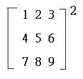
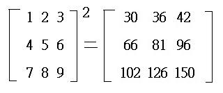
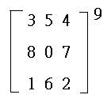
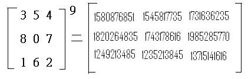

三階矩陣整數冪(II)
程式是由網友Alan cai提供。
程式一可以計算一個3×3矩陣的正整數冪(n>0)。
程式更新日期: 2013年6月1日
程式(264 bytes，正整數冪數 n>0)
程式需要在 REG Lin 模式下執行，因此在選擇新程式位置後，按 5 1 選用REG Lin模式。
注意: 藍色的英文字為統計模式中的變數( n 按 Shift 1 3， Σx 按 Shift 1 2， Σx2 按 Shift 1 3，Σy 按 Shift 1 → 2，Σxy 按 Shift 1 → 3)，FreqOn 按 Shift MODE ← ← 1。
Lbl 0: FreqOn: E50→M: ?→A: ?→B: ?→C: 1 ; . 5(A+B-2C DT:
- 1 ; . 5(A-B DT: 1 , 1 ; C DT: ?→D: M-1 , 1 ; M(D-C DT: ?→X:
0 , 1 ; - Σy DT: ?→Y: ; Y DT: , M-1 ; M(X - Y DT: ?→D: ?→X:
?→Y: M-1, 0; M(X-Σx
DT: 0 ; - n
DT: ; D DT: ?→M: 2; 0
DT: M:
Lbl 1: For 2→M To Ans: Σx4A +
ΣxyB + nC→D:
Σx3A+ ΣyB +
ΣxC→X:
Σx2yA + Σy2B + YC→C : X→B : D→A: Next: A◢ B◢ C◢ ; 0DT:
Ans - 1; 0DT: Ans<0 => Goto 0: ;0 DT: If Ans: Then Σxy→A: Σy→B:
Σy2→C: Else n→A: Σx→B: Y→C: IfEnd: M - 1: Goto 1
例題1: 計算

按 Prog 1 再按 1 EXE 2 EXE 3 EXE 4 EXE 5 EXE 6 EXE 7 EXE 8 EXE 9 EXE 2 EXE
(顯示30) EXE (顯示36) EXE (顯示42) EXE (顯示66) EXE (顯示 81)
EXE (顯示 96) EXE (顯示 102) EXE (顯示 126) EXE (顯示 150)
所以答案為

例題2: 計算

按 Prog 1 再按 3 EXE 5 EXE 4 EXE 8 EXE 0 EXE 7 EXE 1 EXE 6 EXE 2 EXE 9 EXE
(顯示1580876851) EXE (顯示1545817735) EXE (顯示1731636235) EXE (顯示1820264835) EXE (顯示
1743178616)
EXE (顯示 1985285770) EXE (顯示 1249213485) EXE (顯示 1235213845) EXE (顯示 1371541616)
所以答案為

返回 CASIO fx-50FH、fx-3650P II、fx-50FH II及fx-50F PLUS 程式集